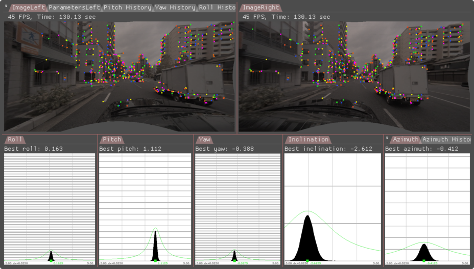
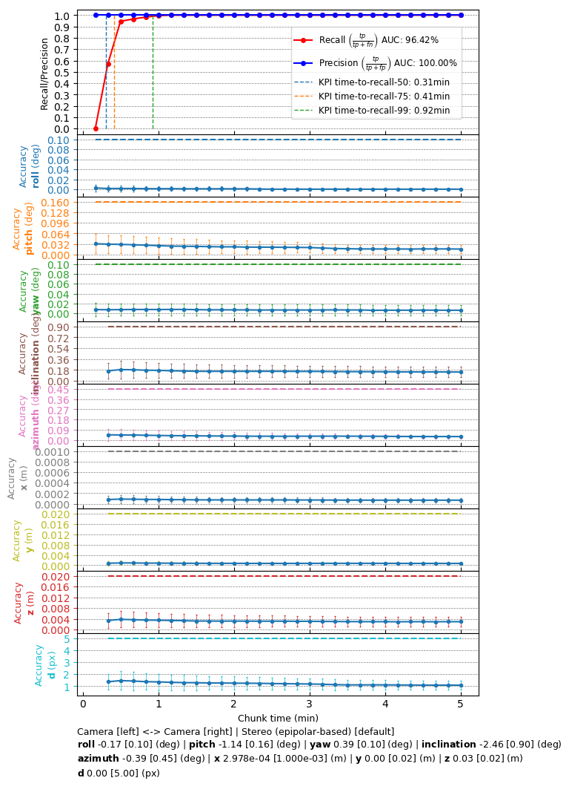

Operating Principle
Given a horizontal stereo rig, the right camera's extrinsic pose calibration with respect to the left camera is represented by both orientation and position parameters.
Orientation parameters are defined as roll, pitch and yaw, while position parameters are defined as x, y, z. The orientation parameters identify the rotation that aligns the right camera orientation to the left camera orientation. The position parameters identify the translation between the right camera position and the left camera position. All six parameters are crucial in tasks such as stereo rectification and disparity estimation that rely on the relative pose of the right camera with respect to the left camera.
NVIDIA® DriveWorks uses visually matched features to calibrate the right camera's orientation and position in a self-calibration setting. While orientation is calibrated fully, position is only calibrated up to norm, i.e., up to the relative translation between the two cameras specified in the rig file. All six parameters are calibrated simultaneously by estimating the transformation that best satisfies the epipolar constraint on the feature matches.
Right Camera Roll / Pitch / Yaw / X / Y / Z
The features obtained from the left image are matched to those obtained from the right image. Using the well-known epipolar constraint, the relative transformation between the left and the right camera is estimated. This relative transformation provides roll, pitch, yaw, as well as x, y, z components of the right camera with respect to the left camera.
The instantaneous calibration for an image pair is accumulated in histograms for the calibration's roll, pitch, yaw, x, y, z components to estimate a final calibration in a robust way.

Matched features are represented by the same color in the top left and top right image tiles. Roll, pitch, yaw, inclination and azimuth histograms of an epipolar-calibrated stereo rig, collected over a period of time, are shown in the bottom tiles. Inclination and azimuth histogram are used to have a compact representation of the x, y, z translation component up to norm.
Requirements
Initialization Requirements
- Nominal values on camera calibration
- Orientation(roll/pitch/yaw): roll/pitch/yaw less than 5 degree error
- Position(x/y/z): less than 10 mm
- Intrinsic calibration: accurate to 0.5 pixel
Runtime Calibration Dependencies
- IMU-based egomotion needs to be based on accurate IMU calibration and odometry properties
Input Requirements
- Assumption: feature matches (right-to-left) compatible with DriveWork's module Features
Output Requirements
- Corrected calibration for roll/pitch/yaw/x/y/z (mandatory)
- Correction accuracy:
- roll/yaw: less than 0.10deg error
- pitch: less than 0.2deg error
- x/y/z: less than 2cm error
- Time/Events to correction:
- roll/pitch/yaw/x/y/z: less than 0:27 minutes in 75% of the cases, less than 0:49 minutes in 100% of the cases
Cross-validation KPI
Several hours of data are used to produce a reference calibration value for cross-validation. Then, short periods of data are evaluated for whether they can recover the same values. For example, the graph below shows precision/recall curves of stereo self-calibration. Precision indicates that an accepted calibration is within a fixed precision threshold from the reference calibration, and recall indicates the ratio of accepted calibrations in the given amount of time.

Workflow
The following code snippet shows the general structure of a program that performs stereo self-calibration
while(true)
{
}
DW_API_PUBLIC dwStatus dwCalibrationEngine_getCalibrationStatus(dwCalibrationStatus *status, dwCalibrationRoutineHandle_t routine, dwCalibrationEngineHandle_t engine)
Returns the current status of a calibration routine.
DW_API_PUBLIC dwStatus dwCalibrationEngine_initializeStereo(dwCalibrationRoutineHandle_t *routine, uint32_t vehicleSensorIndex, uint32_t leftSensorIndex, uint32_t rightSensorIndex, const dwCalibrationStereoParams *params, cudaStream_t stream, dwCalibrationEngineHandle_t engine)
This method initializes a stereo camera pose calibration routine relative to the sensor index of the ...
DW_API_PUBLIC dwStatus dwCalibrationEngine_addMatches(const dwFeatureHistoryArray *matches, dwTime_t timestamp, uint32_t leftSensorIndex, uint32_t rightSensorIndex, dwCalibrationEngineHandle_t engine)
Adds detected visual feature matches to the calibration engine.
DW_API_PUBLIC dwStatus dwCalibrationEngine_initialize(dwCalibrationEngineHandle_t *engine, dwRigHandle_t rig, dwContextHandle_t context)
Creates and initializes a Calibration Engine.
DW_API_PUBLIC dwStatus dwCalibrationEngine_startCalibration(dwCalibrationRoutineHandle_t routine, dwCalibrationEngineHandle_t engine)
Starts a calibration routine associated with a calibration engine.
DW_API_PUBLIC dwStatus dwCalibrationEngine_getSensorToSensorTransformation(dwTransformation3f *sensorToSensor, uint32_t indexA, uint32_t indexB, dwCalibrationRoutineHandle_t routine, dwCalibrationEngineHandle_t engine)
Returns the current sensor to sensor transformation of a calibration routine estimating this transfor...
DW_API_PUBLIC dwStatus dwCalibrationEngine_stopCalibration(dwCalibrationRoutineHandle_t routine, dwCalibrationEngineHandle_t engine)
Stops a calibration routine associated with a calibration engine.
DW_API_PUBLIC dwStatus dwFeature2DTracker_trackFeatures(dwFeatureHistoryArray *featureHistoryArray, dwFeatureArray *predictedFeatures, float32_t *d_normalizedCrossCorrelation, const dwFeatureArray *featuresToTrack, const dwVector2f *d_predictedPositions, const dwPyramidImage *previousPyramid, const dwPyramidImage *currentPyramid, dwFeature2DTrackerHandle_t obj)
Tracks features and store the tracked results to predictedFeatures between the previous and current i...
Holds pointers to the data exposed by a feature2d list.
DW_API_PUBLIC dwStatus dwFeature2DDetector_detectFromPyramid(dwFeatureArray *outputDetections, const dwPyramidImage *pyramid, dwFeatureArray *preTrackedFeatures, const float32_t *d_normalizedCrossCorrelation, dwFeature2DDetectorHandle_t obj)
Detects new features and append them after old tracked features.
This workflow is demonstrated in the following sample: Stereo Calibration Sample